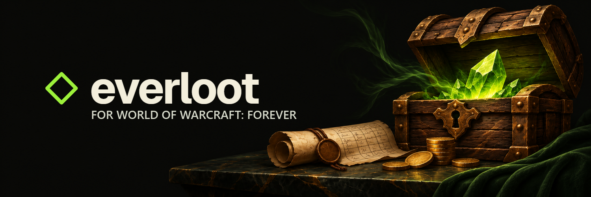
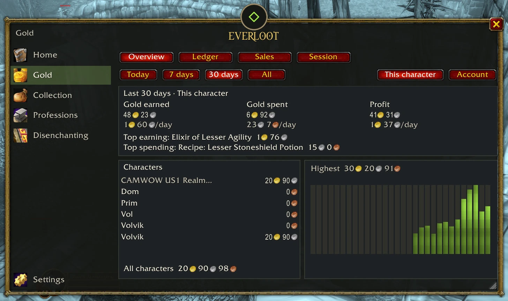
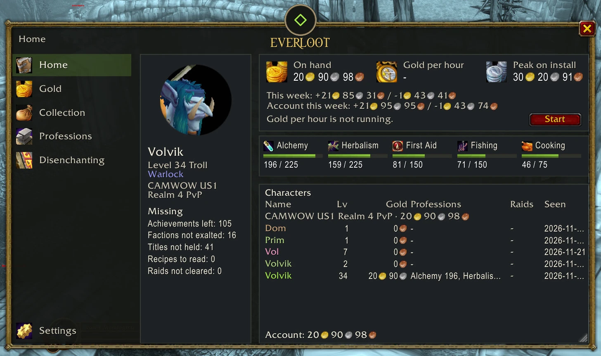
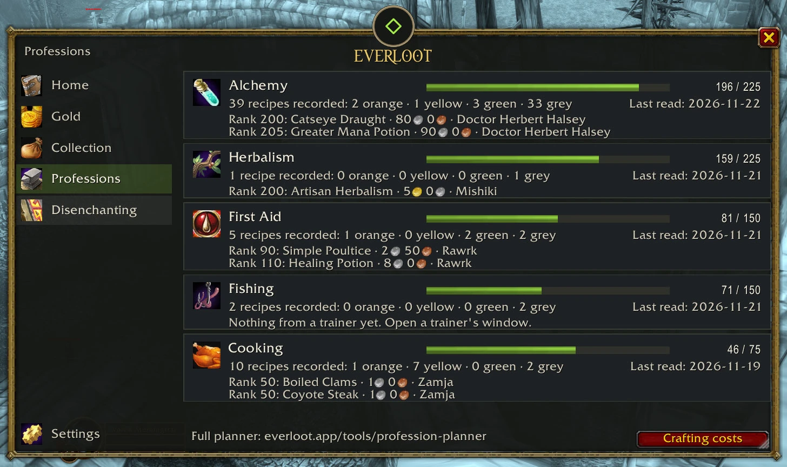
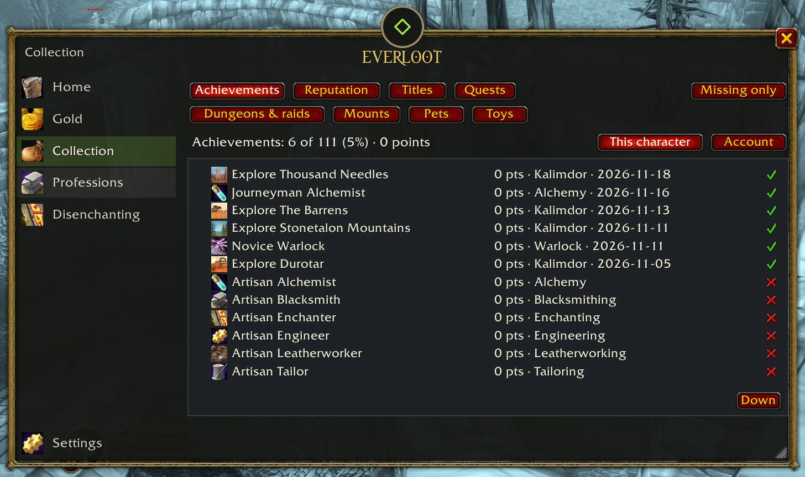

Everloot is a free, open-source add-on. See what a farm earns, check prices and drop sources on item tooltips, and compare recipe costs before buying materials. It also brings flight timers, a minimap button drawer, and talent and raid planners into the game.
Just installed? Click the lime diamond on your minimap or type /everloot window. To time your first farm, type /everloot gph start.




See the gold on every character you play. The ledger shows income and spending, the Sales tab tracks auction proceeds, and the session timer measures gold per hour while you farm.
Start a scan from the Everloot tab, look up items by name and keep shopping lists with quantities and price caps. Open in Buy searches the game's Buy tab for the item. The Sell tab can flag when vendoring or disenchanting may pay more. You control every purchase, bid and listing.
See your profession ranks and recipe costs, compare the product's estimated value with its reagent costs, and send the materials for a batch to your shopping list.
Hover an item to see available auction and vendor prices, your own sale and purchase history, drop rates, sources and disenchant estimates. Open Disenchanting in Everloot to review your materials and their estimated value. Use /everloot price or /everloot where with an item link to look it up in chat.
Your own scans can supply prices in game. The optional Everloot Desktop App adds community prices, observed drop rates and crafting market estimates when data is available. Auction snapshots show asking prices. Drop rates include the number of loot windows behind the estimate.
Gather compatible add-on buttons into a drawer beside the Everloot crest. Run /everloot buttons on, then /reload. Hover the crest to open the drawer. Left-click opens Everloot and right-click opens settings. /everloot buttons off puts the buttons back after a reload.
◇ Everloot crest → ● ▲ ■
Hover the crest to reveal the grouped buttons. Illustration.
Hover over a destination on the flight map to see its estimated travel time. Once airborne, the bar shows the route and time remaining when available. Everloot remembers completed trips to improve your estimates. Toggle it with /everloot flight on or /everloot flight off.
◆ ◆ ◆ ◈ ◇ ◇ ◇ About 0:48 left
Diamonds fill as you fly. Example flight display.
/everloot to import a plan from the talent calculator or raid planner. Follow the next talent point when the plan includes an order, or compare your raid groups and check for missing buffs./ask with the optional Desktop App to look up recorded prices and other Everloot data. Answers appear in chat after the app processes the question and you reload.The Collection tab tracks achievements, reputation, titles, quests, dungeon and raid kills, lockouts, mounts, pets and toys. Switch between the current character and your account where supported. Optional local inventory snapshots count items in your bags, bank and mail when the game makes them available.
/everloot window to open the add-on or /everloot setup to choose a preset. Use /everloot options to choose features individually or see the full command list.Everloot records observations such as loot, NPC sightings, vendor stock, recipes, gathering and auction prices in SavedVariables/Everloot.lua. To contribute, log out or use /reload, then preview and upload the file, or set up the optional Desktop App. Census, player and guild data have their own settings, and /everloot link connects your character to your Everloot account using a code from the site. Your gold ledger and local character roster stay in your save file. See what is shared.
Explore the database · Discord · Source · Report a bug
Everloot is an independent fan project. Code is licensed AGPL-3.0 and data is CC BY-SA 4.0.